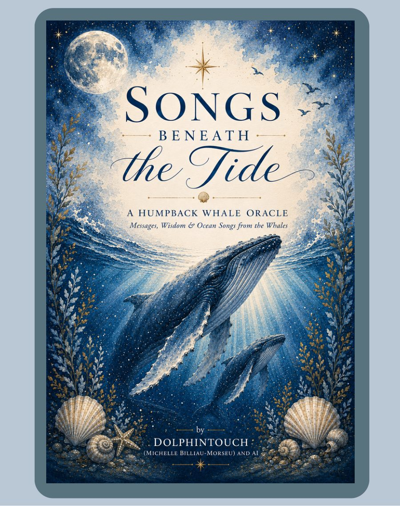

Songs Beneath the Tide
A Humpback Whale Oracle
Beneath the waves, every song carries a story. Take a quiet moment, imagine the ocean around you, and allow the whales to share a message with your heart.

Whale song is off
Close your eyes, take a slow breath, and choose the reading that calls to you.
Tap each card to turn it over. Then open its meaning.
Each reading offers a moment for reflection and personal insight. The short, easy-to-read meanings are adapted from the original Songs Beneath the Tide oracle pages. Original illustrated meanings remain available for viewing. Cards are drawn at random, without repeats within a reading. The spread positions are prompts for personal reflection, not predictions.